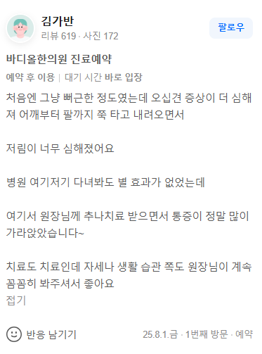

治疗案例（实际患者评价原文）
"起初只是感觉酸胀，后来五十肩症状加重，痛感从肩膀一直向下延伸到手臂，麻木感非常严重。在这里接受了推拿疗法(Chuna)后，疼痛真的减轻了很多~"

1. 从肩膀延伸至手臂的麻木，极有可能是颈椎神经受压与胸椎位移相结合的放射痛，而非单纯的关节炎。
2. 仅针对肩部关节的治疗方式，无法从根本上解决源自脊椎的神经问题。
3. Bodyall SART脊椎排列恢复术通过矫正脊椎中心轴，打开通往肩部的神经路径，从而根除疼痛。
许多人出现肩部疼痛加重及手臂麻木时，往往简单地认为是“五十肩”或“肩袖损伤”。但实际上，颈椎的位移往往会极大加重肩周肌肉的紧张度，并压迫神经引发放射痛 [cite: 1, 2]。脊椎的扭曲会改变肩胛骨的位置，从而在物理上限制肩关节的活动范围。
单纯进行肩部炎症治疗虽能暂时缓解疼痛，但导致肩膀弯曲的脊椎与骨盆的结构性原因依然存在。Bodyall通过SART (Spinal Alignment Restoration Therapy) 同时矫正脊椎与骨盆的歪斜，使通往肩部的神经与血管通道恢复正常。
• 矫正颈椎与胸椎的排列，消除肩部神经受压的原因。
• 恢复从骨盆延伸至脊椎的生物力学中心轴。
• 为虚弱的肩部周围组织提供营养，恢复韧带弹性。
• 温和放松僵硬的表层肌肉，逐步扩展肩关节活动范围。
1. Cyriax, J. (1982). Textbook of Orthopaedic Medicine. Baillière Tindall.
2. Kapandji, A. I. (2007). The Physiology of the Joints: The Upper Limb. Elsevier.